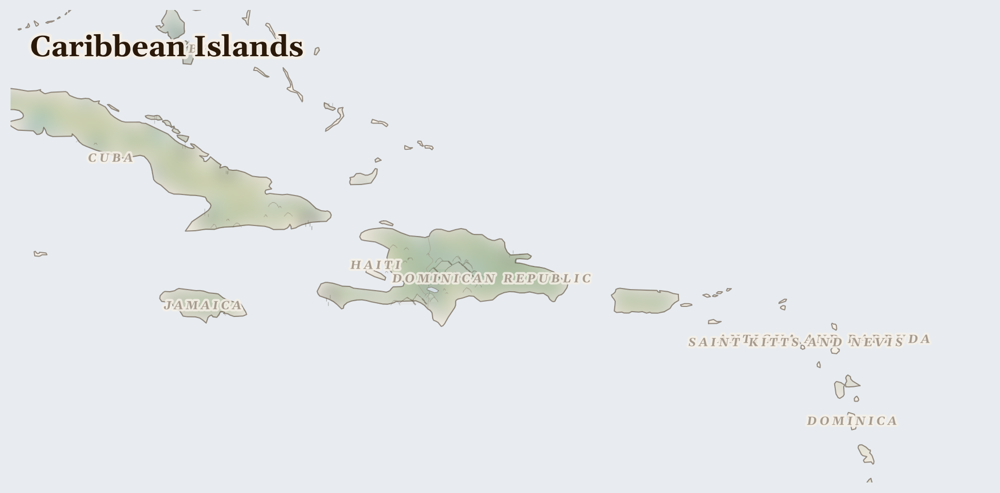

Caribbean Islands
Barbados, Cuba, Jamaica and 11 more countries
Neotropic
A necklace of islands in a warm turquoise sea — some tiny, some big, each with its own music, food, and way of talking. Hurricanes visit in summer, so people here know how to rebuild and help each other.
How Life Works Here
Islands live from the sea and from visitors: fishing boats go out early, farmers grow mangoes and plantains, and people welcome tourists to their beaches. Families are often spread across the water — a grandmother on one island, cousins in another country — sending love and help back and forth.
Rural wood collectors (primarily women and children), Charcoal traders supplying urban cooking fuel demand in Haiti.
Haitian diaspora (~2M in US, Canada, France), Jamaican diaspora (~1.5M in US, UK, Canada), Women-headed households managing remittance income.
Artisanal fishers (pirogue and small boat), Women fish vendors in coastal markets.
What Is Happening
On one island, Haiti, life is very hard right now. Armed gangs control parts of the biggest city, people have been killed, and many families have left their neighbourhoods to be safe. Schools and hospitals struggle to stay open. But Haitians are famous for courage: street vendors still open their stalls, churches shelter families, and neighbours guard each other's children like their own.
Something Wonderful
Hundreds of years ago, the people of Haiti — who had been enslaved — rose up and made the world's first free Black republic. Their fight helped end slavery in many lands. Courage from a small island changed the whole world once. It can again.
Let's Do Something Together
What Is Inside a Phone?
Hold a phone or tablet (turned off!). Inside are tiny pieces of metal from deep underground — coltan, copper, gold, and lithium. These metals come from mines in countries where people sometimes have to fight over who gets to dig them up. Everything we use is connected to someone far away.
- old phone or tablet (for holding)
For grown-ups
Consumer electronics contain conflict minerals sourced from artisanal mines in crisis regions. Cobalt from DRC, tantalum from central Africa, and lithium from contested territories link everyday devices to displacement and exploitation.
Let Us Pray Together
God, help the people who find the metals we use every day.
Leader: We pray for those who are hungry. For the hundreds of thousands across Caribbean Islands who cannot meet their daily food needs.
All: Lord, hear our prayer.
Leader: We pray for the displaced. For the millions driven from their homes.
All: Lord, hear our prayer.
Leader: We pray for those living under violence. For communities enduring fighting across Caribbean Islands, an..
All: Lord, hear our prayer.
Leader: We pray for Haiti. Especially for Haiti, facing the most severe convergence of crises in this region.
All: Lord, hear our prayer.
O give thanks to the Lord, for he is gracious, for his steadfast love endures for ever. Let the redeemed of the Lord say this, those he redeemed from the hand of the enemy,
Collect
Lord of all power and might, the author and giver of all good things: graft in our hearts the love of your name, increase in us true religion, nourish us with all goodness, and of your great mercy keep us in the same; through Jesus Christ your Son our Lord, who is alive and reigns with you, in the unity of the Holy Spirit, one God, now and for ever.
Amen.
Talk About It
When a storm knocks something down, islanders rebuild it together. What is something in your neighbourhood that people could only fix by working together?
One Thing We Can Do
Learn this Haitian proverb: "Men anpil, chay pa lou" — many hands make the load light (say it: men AHN-peel, shy pah loo). Use your hands for one helping job today, and pray for Haiti while you do it.